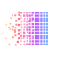
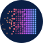
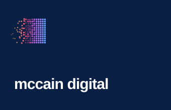
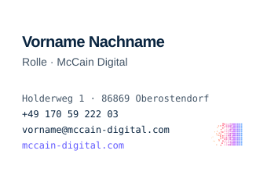

Marke · v1 · September 2026Brand · v1 · September 2026
mccain digital
Die Bildmarke ist ein Block aus Pixeln, der sich aus Staub zusammensetzt – die Daten kommen von links, das Produkt steht rechts. Alles auf dieser Seite wird aus der Regel berechnet, nicht als Bild gespeichert: Größe, Farbe und Bewegung folgen derselben Funktion. Jede Datei steht weiter unten zum Download bereit.The mark is a block of pixels assembling out of dust — the data arrives on the left, the product stands on the right. Everything on this page is computed from the rule, not stored as an image: size, colour and motion follow the same function. Every file is below, ready to download.
01
KonstruktionConstruction
Vier Zahlen, und jede Person im Team kann die Bildmarke reproduzieren. Kein Buchstabe, keine Ziffer – eine Regel auf einem Raster.Four numbers, and anyone on the team can reproduce the mark. No letter, no figure — a rule on a grid.
- {{ k.label }}
- {{ k.value }}
- {{ k.note }}
Unter 40 px lässt die Regel den entfernten Staub weg, damit die Kachel scharf bleibt; unter 16 px steht die Platte allein. Schutzzone ringsum: ein Viertel der Kante – nichts berührt die Platte, nicht einmal die Wortmarke. Kleinste Kachel: 16 px am Bildschirm, 6 mm im Druck.Below 40 px the rule drops the distant dust so the tile stays crisp; below 16 px the plate stands alone. Clear space all around: a quarter of the edge — nothing touches the plate, not even the wordmark. Smallest tile: 16 px on screen, 6 mm in print.
02
VersionenVersions
Standard ist die freie Bildmarke ohne Platte – leichter und genau richtig für die Website, für Dokumente und für Social Media. Die Platte bleibt dort, wo ein Untergrund gebraucht wird: App-Icon, Favicon, Avatar.The default is the free mark without a plate — lighter, and exactly right on the website, in documents and on social. The plate stays where a ground is needed: app icon, favicon, avatar.
{{ t.note }}
Die Logo-Kombination in vier Größen: Kachel 24/28/32/46, Wort 15/17/21/33. Der Abstand zwischen Kachel und Wort beträgt immer die halbe Kachelkante.The lockup in four sizes: tile 24/28/32/46, word 15/17/21/33. The gap between tile and word is always half the tile edge.
Ohne PlatteWithout a plate
Auf der Website und überall dort, wo die dunkle Platte zu schwer wirken würde, steht die Bildmarke frei: Farbe auf Hell, Weiß auf Dunkel, einfarbig Navy. Kein Rahmen, kein Untergrund – der Staub braucht dann eine ruhige Fläche.On the website and anywhere the dark plate would sit too heavy, the mark stands free: colour on light, white on dark, single-colour navy. No frame, no ground — the dust then needs a quiet surface.
{{ f.note }}

mccain digital mccain digital
mccain digitalOhne Platte läuft die Bildmarke etwas größer als die Kachel: 34/28/24 statt 28/24/20 neben demselben Wort – der Staub zählt nicht als Fläche. Der Abstand zum Wort bleibt die halbe Kante der Bildmarke.Without the plate the mark runs slightly larger than the tile: 34/28/24 instead of 28/24/20 beside the same word — the dust does not count as area. The gap to the word stays half the mark edge.
03
WortmarkeWordmark
Instrument Sans 600, −0.03 em, immer kleingeschrieben – „mccain digital“, nie „McCain Digital“ im Logo. Zwei Versionen: die ruhige als Standard, die mit Verlauf für Stellen, an denen die Marke für sich allein steht.Instrument Sans 600, −0.03 em, always lowercase — “mccain digital”, never “McCain Digital” in the logo. Two versions: the quiet one as default, the gradient one for places where the brand stands alone.
Navy auf Hell, Weiß auf Navy. Navigation, Footer, Dokumente, Signatur.Navy on light, white on navy. Navigation, footer, documents, signature.
„digital“ trägt den Verlauf der Bildmarke. Titelfolien, Social Media, große Flächen – nie unter 24 px.“digital” carries the gradient of the mark. Title slides, social, large surfaces — never below 24 px.
Weiß, gleiche Maße. Die Verlaufsversion funktioniert auf Navy genauso gut.White, same metrics. The gradient version works on navy just as well.
- {{ r.k }} {{ r.v }}
04
FarbeColour
Navy trägt und zeigt: Auf Hell ist Navy auch die Aktion, auf Dunkel übernimmt das Himmelblau. Die vier Verlaufsfarben gehören dem Stream und der Bildmarke – sie erscheinen nie allein als Fläche.Navy carries and points: on light it is also the action, on dark sky blue takes over. The four gradient colours belong to the stream and the mark — they never appear alone as a surface.
linear-gradient(90deg, var(--mc-orange), var(--mc-pink) 33%, var(--mc-violet) 66%, var(--mc-sky))
05
TypografieTypography
Zwei Schriftfamilien, zwei Aufgaben. Instrument Sans spricht, JetBrains Mono misst.Two families, two jobs. Instrument Sans speaks, JetBrains Mono measures.
Aa Gg 0123
Überschriften 600–700 bei −0.03 bis −0.04 em, Fließtext 400 bei 1.55 Zeilenhöhe. Buttons 600. Die Wortmarke.Headings 600–700 at −0.03 to −0.04 em, body copy 400 at 1.55 line height. Buttons 600. The wordmark.
0.25 ms · 4×100
Eyebrows in Versalien bei .1–.12 em Laufweite, Zahlen, Labels, Code, Datenknoten. Nie für Fließtext.Eyebrows in caps at .1–.12 em tracking, numbers, labels, code, data nodes. Never for body copy.
06
IconsIcons
Dünne Linien, 1.75 Strichstärke auf einem 24er-Raster, runde Kappen – im Lucide-Stil. Die Farbe kommt vom Text (currentColor); Navy, auf Dunkel Himmelblau, nur im aktiven Zustand. Die einzige Ausnahme ist der Pixel: Ein KI-Zustand darf einen einzelnen Verlaufspixel tragen, sonst nichts.Thin lines, 1.75 stroke on a 24 grid, round caps — Lucide style. Colour comes from the text (currentColor); navy, sky blue on dark, only in the active state. The one exception is the pixel: an AI state may carry a single gradient pixel, nothing else.
{kind=link}
<svg width="18" height="18" aria-hidden="true"> <use href="/brand/mccain-icons.svg#arrow-right"></use> </svg> /* Stroke and colour come from the symbol: 1.75, currentColor, round caps */
07
BewegungMotion
Drei Zustände, mehr bekommt die Bildmarke nicht. Eine Kurve für alles: cubic-bezier(.2, .8, .2, 1). Keine Feder, kein Abprallen. Wer reduzierte Bewegung aktiviert hat, sieht die fertige Bildmarke.Three states, and the mark gets no more. One curve for everything: cubic-bezier(.2, .8, .2, 1). No spring, no bounce. Anyone with reduced motion enabled sees the finished mark.
{{ m.note }}
Die Bildmarke setzt sich zusammen, der Staub zieht weiter nach rechts, das Wort wischt dahinter ein. Das Wort kommt immer nach der Bildmarke, nie davor.The mark assembles, the dust carries on to the right, the word wipes in behind it. The word comes after the mark, never before.
08
AnwendungenApplications

Avatar · rundAvatar · round09
GeschäftsausstattungStationery
Visitenkarte, Briefbogen, E-Mail-Signatur, Präsentation. Jede Vorlage ist eine Datei weiter unten; die Signatur kommt als HTML zum Einfügen.Business card, letterhead, email signature, presentation. Every template is a file below; the signature comes as HTML to paste in.


Visitenkarte · 85 × 55 mm · Vorderseite Navy, Rückseite WeißBusiness card · 85 × 55 mm · navy front, white back Briefbogen · A4 · Logo-Kombination 44 oben links, Mono-FußzeileLetterhead · A4 · lockup 44 top left, mono footer
Briefbogen · A4 · Logo-Kombination 44 oben links, Mono-FußzeileLetterhead · A4 · lockup 44 top left, mono footerVorname NachnameFirst Last RolleRole · mccain digital +49 000 0000000 · vorname@mccain-digital.com mccain-digital.com |
10
Social MediaSocial
OG-Karte, Story, LinkedIn-Banner, X-Header, quadratischer Post – jeweils in Dunkel und Hell. Die Bildmarke sitzt groß, die Wortmarke mit Verlauf, eine Zeile Mono am Fuß.OG card, story, LinkedIn banner, X header, square post — each in dark and light. The mark sits large, the wordmark with gradient, one line of mono at the foot.
11
Im CodeIn code
Die Marke als Tokens, die Logo-Kombination als drei Zeilen HTML, die Bewegung als Keyframes. Um die Regel selbst zu berechnen: Die Funktion lebt inThe brand as tokens, the lockup as three lines of HTML, the motion as keyframes. To compute the rule yourself: the function lives in BildmarkeMark, Methode tile()., method tile().
{{ c.src }}12
So nichtNot like this
- {{ d.k }}
{{ d.v }}
13
DateienFiles
{{ filesLead }}
{{ modal.title }}
{{ modal.lead }}
- {{ i }}
- {{ i }}
- {{ i }}
- {{ i }}
- {{ i }}